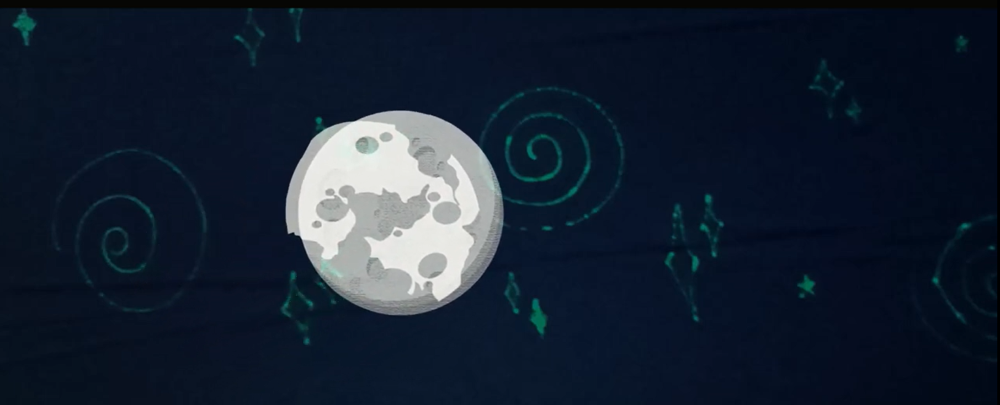
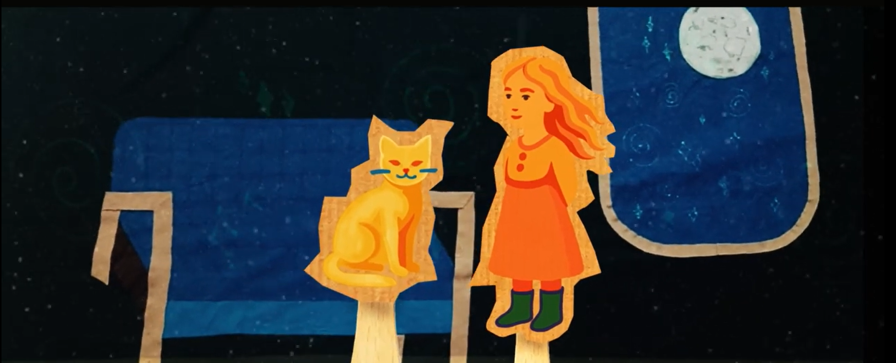
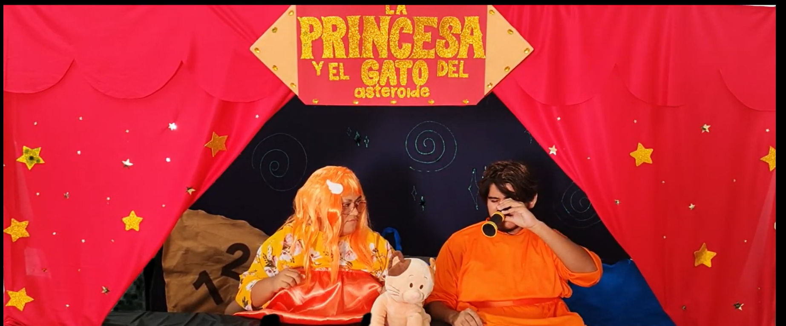
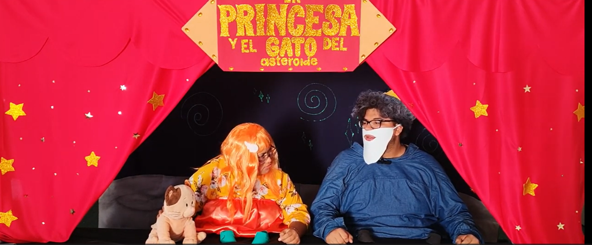
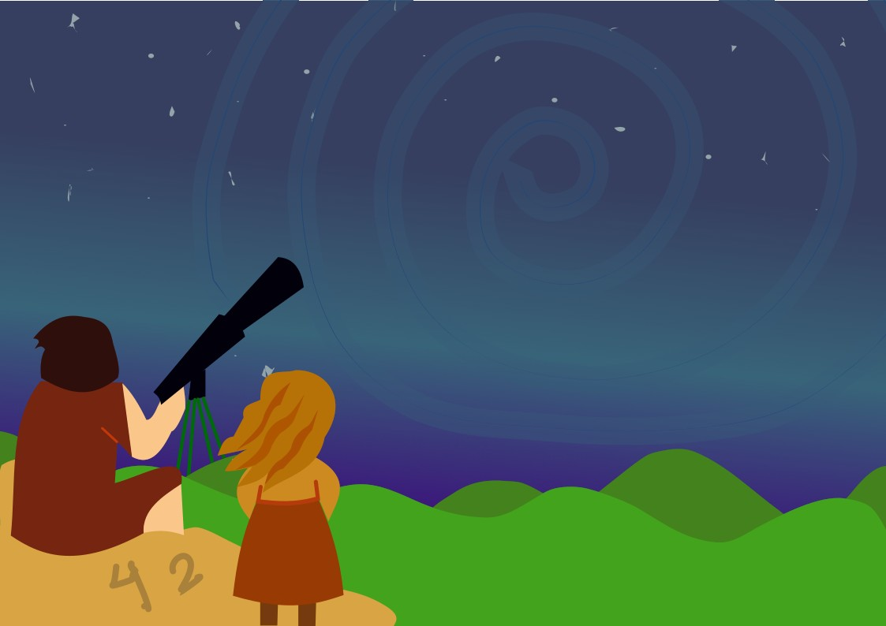
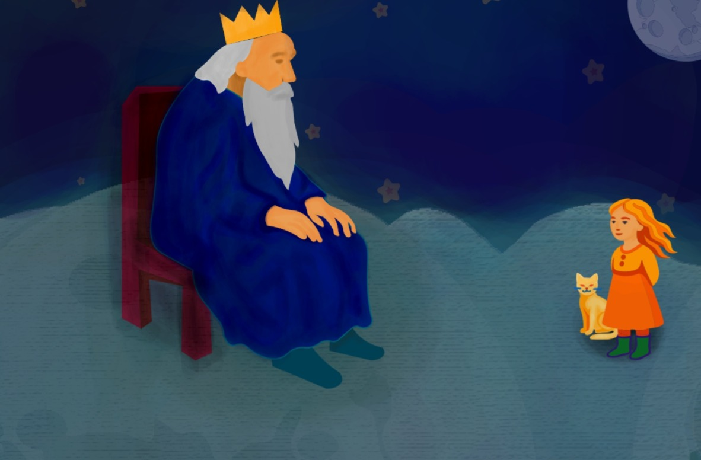

Escenografía
Las escenografías usadas fueron variadas, desde pantalla verde, hasta utilería casera hecha manualmente. Incluso se incluyeron animaciones en el video final de la obra.
Aquí se puede ver un ejemplo de la pantalla verde usada. En la siguiente escena también se utilizó para insertar una ilustración representativa.
En estas otras escenas se puede ver la utilería y escenografías hechas a mano con materiales como fomi, fieltro, brillantina, etc.
 Cada una de ellas busca asimilar las escenas ilustradas que fueron diseñadas para su representación en la obra.
 La obra cuenta con efectos visuales digitales, animaciones, música y sonidos para dar ambientación.
En el apartado de "Nuestro proyecto" se puede visualizar la obra (👉ﾟヮﾟ)👉
⬅️ Volver